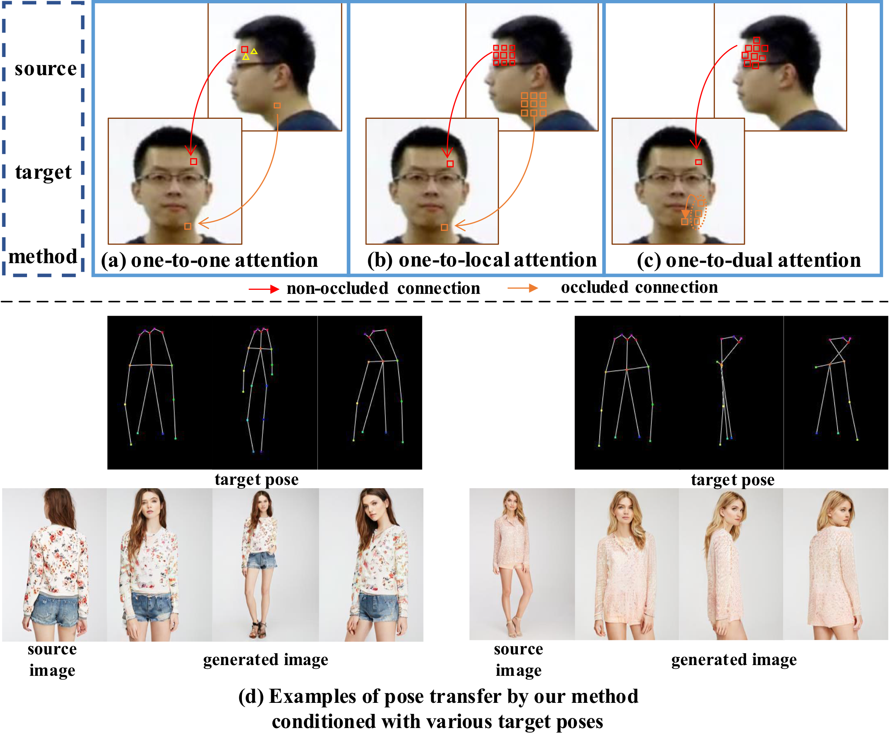
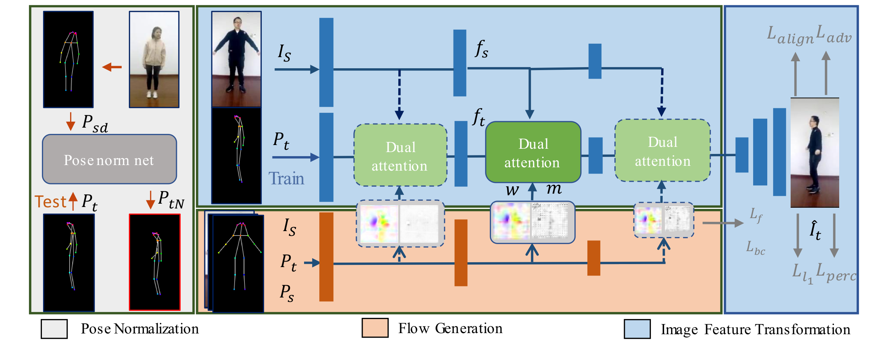
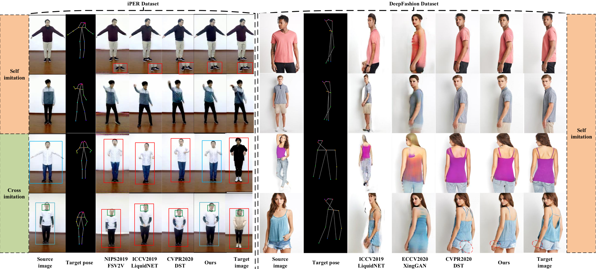
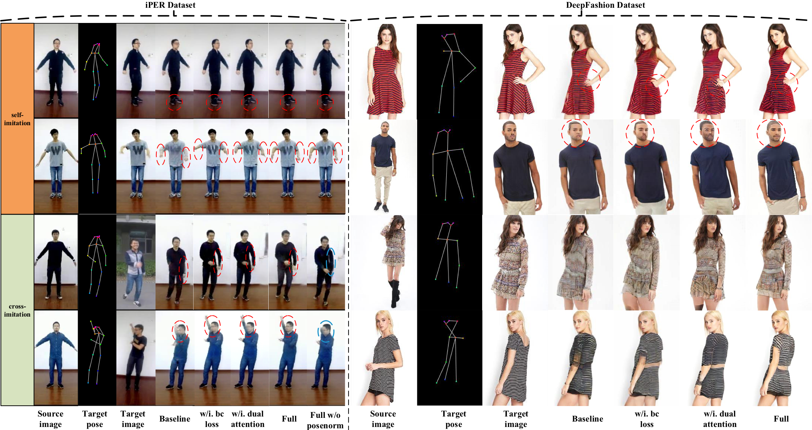
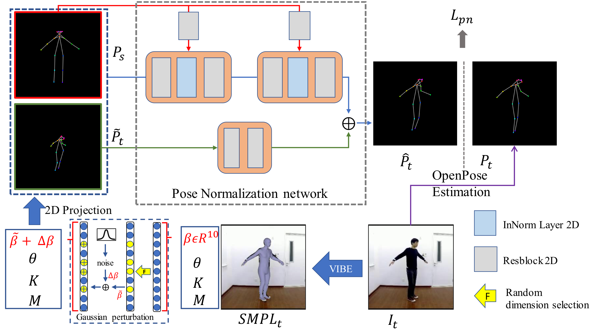
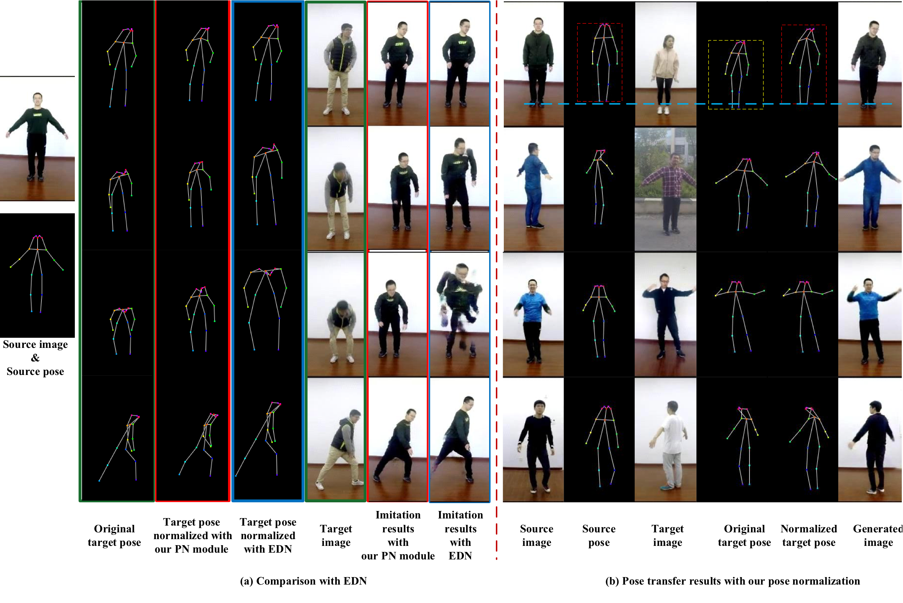
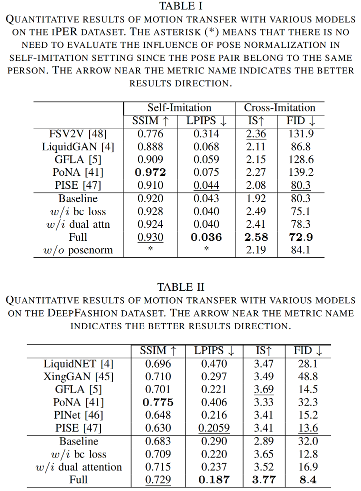

Abstract
Human pose transfer aims at transferring the appearance of the source person to the target pose. Existing methods utilizing flow-based warping for non-rigid human image generation have achieved great success. However, they fail to preserve the appearance details in synthesized images since the spatial correlation between the source and target is not fully exploited. To this end, we propose the Flow-based Dual Attention GAN (FDA-GAN) to apply occlusion- and deformation-aware feature fusion for higher generation quality. Specifically, deformable local attention and flow similarity attention, constituting the dual attention mechanism, can derive the output features responsible for deformable- and occlusion-aware fusion, respectively. Besides, to maintain the pose and global position consistency in transferring, we design a pose normalization network for learning adaptive normalization from the target pose to the source person. Both qualitative and quantitative results show that our method outperforms state-of-the-art models in public iPER and DeepFashion datasets.

Illustration of dual attention compared with conventional one-to-one and one-to-local attention sampling strategies.

Overall framework of FDA-GAN with flow generation, dual attention, and pose normalization modules.

Qualitative comparison with state-of-the-art methods on DeepFashion and iPER datasets.

Ablation study validating bidirectional consistency loss, dual attention, and pose normalization.
Pose Normalization
Motion transfer should preserve the source person's appearance, global location, and body shape. Since ground-truth skeletons with the same pose but different shape are scarce, we fit the SMPL model with a 3D body estimator and apply Gaussian perturbation to shape parameters to synthesize training pairs. The self-supervised Pose Normalization Network (PN Net) then learns to map these modified poses back to the original target pose, aligning skeleton structure between source and target without relying on costly 3D modeling at test time.

Training pipeline of the pose normalization network.

Comparison with EDN normalization (left) and pose transfer results with our PN Net (right), preserving source body size and global position.
Pose Transfer Results

Quantitative comparison with state-of-the-art methods on iPER and DeepFashion datasets.
Paper Preview
BibTeX
@article{Ma2023FDAGAN,
title={FDA-GAN: Flow-Based Dual Attention GAN for Human Pose Transfer},
author={Ma, Liyuan and Huang, Kejie and Wei, Dongxu and Ming, Zhaoyan and Shen, Haibin},
journal={IEEE Transactions on Multimedia},
volume={25},
pages={930--941},
year={2023},
publisher={IEEE},
doi={10.1109/tmm.2021.3134157}
}